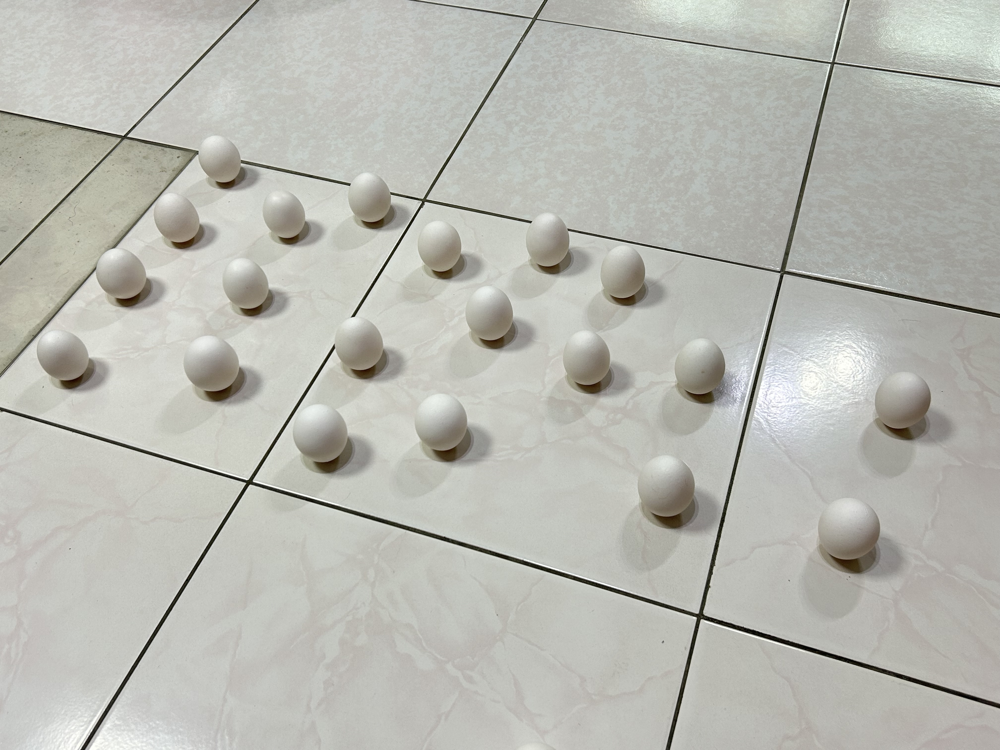

又到了一年一度的端午節立蛋啦！
今年戰績
11:42～13:53 共 131 分鐘，立了 20 顆蛋。

好久沒在這裡寫文章，都積滿了灰塵⋯⋯
而且久違的一篇，居然是「端午節立蛋」系列？青菜啦XD
在剛剛的立蛋過程中，腦中跑出很多聲音，比方「剛剛明明就在短短幾分鐘內連續立起來好幾顆，我這顆已經立了那麼久都還沒立起來，我真的還有辦法再立一顆嗎？」，或者「這顆蛋怎麼看越久，越覺得上頭有張可愛動物臉(?)在對我微笑？也太俏皮了吧！」，各種類型的都有，挺有趣的。
還有策略想法 (不知道可以用什麼合適的詞來形容) 的部分。
立完一輪 (也就是每顆蛋都嘗試過，但有些因為立很久都還是立不起來，會先選擇擱著) 以後，想說嘗試看看：既然去年立蛋「改用表面積比較小、也就是比較尖的那一面來立」能夠成功，那為何今年不嘗試套用看看去年的「成功模式」呢？於是乎，那些嘗試被我立過一輪但沒成功立起來的蛋，就改用那種方式來立。
嘗試的過程中一樣各種聲音：我想要證明這個想法是可行的，那些蛋之所以會立不起來，會不會是跟去年的那顆蛋一樣，因為比較鈍的那一面表面上有顆粒狀突起，所以換個面，可能更有機會成功？
不過事情沒那麼順利⋯⋯一開始確實是有成功一兩顆啦，但⋯⋯（我現在想打「但」，但筆電選字一直給我「蛋」，啊想打「蛋」，就又會是「但」😅）
反正就⋯⋯（現在時間 14:27，還沒吃午餐，早餐我也沒吃，想快點結束掉現在在做的事，開始語無倫次了⋯⋯為何不吃完午餐再打？因為吃完午餐就會懶惰了⋯⋯）
反正那個策略的成效沒想像中好。
漁市⋯⋯於是（什麼選自⋯⋯什麼選字嘛，真是⋯⋯），我想到另外一個策略：我有注意到，那些被我立起來的蛋，還蠻多是只花一點點時間就被我立起來，而且還蠻多是在一開始，就明確感受到這顆蛋就是會被我立起來，原因是可能一開始蛋放地板的角度、位置之類的選擇就是會比較好立，所以就讓那次的「嘗試」（注意，不是「蛋」）更容易成功。
所以我猜測，之所以立不起來，或許不是因為「那顆蛋就是不好立」，而是「方式可能需要再調整」，說了這麼複雜，反正我得到的結論是「選擇比努力重要」。
那感受現在有點難用文字去描述，畢竟我目前還蠻常辭不達意之外，也想趕快吃東西不然可能想吃的已經賣完之類的⋯⋯
所以我在接下來不是選擇在一顆蛋上踟躕不前，而是如果感覺在立這顆蛋的一開始就覺得不對勁，我就會很快地換下一顆。很多方面好像也可以這樣去 approach，如果發現卡關了，就先擱著，愛因斯坦說得很有道理：「什麼叫瘋子，就是重複做同樣的事情還期待會出現不同的結果。」先做其他的來轉換一下，再回來的時候，或許會因為「切入點」的不同，讓事情更容易能獲得解決也說不定呢～
除此之外，毅力也很重要。已經超過一點了，我還是告訴自己，我這次想要立 20 顆起來，還有大概兩三顆 (中間有弄倒，哭)，加油！
立第 20 顆蛋起來的那個瞬間真的很感動，那感受，跟考完指考等放榜然後收到成績簡訊然後結果令自己還算滿意的感覺很像啊！（話說，還真懷念那感受啊，已經很久沒那樣的內心體驗了⋯⋯）
好了，國文老師已經給我 0 級分了，我再寫下去，稿紙背面也不夠我瞎扯淡了。
就先這樣吧，想吃東西了。
但說實話，今天立蛋的體驗真的很寶貴，記得這份心路歷程，帶往其他方面吧！
（吃完東西，回來補充：其實仔細想想，第二個策略效果好像也沒有比較突出，整個過程，我覺得重點是「要有個信念讓自己可以持續下去」，畢竟「意義」是我們去賦予的，沒有一個標準答案說它就是要這樣或那樣，でしょう？）